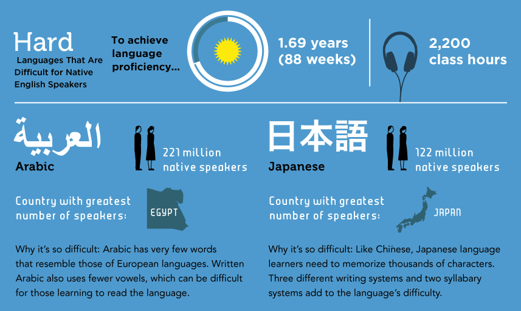
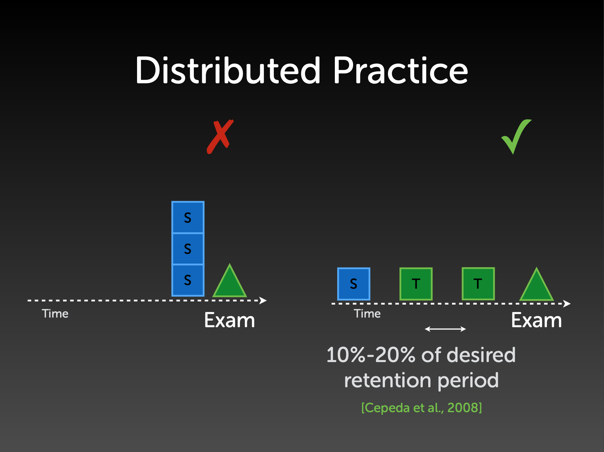

あなたはなぜ英語ができないのか — プロジェクトベース英語学習法のススメ

2025年8月—本記事は、私が2019年に書いたものです。内容的に少し古い箇所もありますが、今でも有用な学習法や考えがありますので、ここで記事を再掲します。
目次
- はじめに
- 巷の英語教材のウソ
- あなたの周りの人は、英語が話せますか？
- あなたが英語ができない理由
- 「私はこうして英語がペラペラになった」
- TOEIC はどうなの
- 環境をハックする
- 具体的にどうすればよいのか
- 英語学習の原則
- おわりに
突然ですが、皆さん、ピアノは上手ですか？「弾けない」と答えた方、でも、義務教育（小学や中学）で、「音楽」の時間がありましたよね。そこで、何らかの鍵盤楽器を練習した方も多いと思います。なぜ上手ではないんでしょう。
サッカー、ならどうでしょう。水泳、でも良いです。「上手でない」と答えた方、でも、義務教育の体育の時間で、サッカーや水泳をいくらか練習した方も多いと思います。なぜ上手ではないんでしょうか。
「練習してないから」
「必要ないから」
「別に好きでもないから」
当たり前ですよね。
このガイドは、この「当たり前」のことを「英語」に対して応用したものです。ピアノやサッカーであれば、「必要無いし、練習していないのだから上手ではないのは当たり前」ということに異論を唱える人は少ないのですが、英語になると「義務教育で小中高と何年も勉強してきたのに話せないのはおかしい」という文句を言う人が居るのは少しおかしな気がします。
あなたが英語ができないのは、学習方法や教材が悪いからでも、学校教育や先生が悪かったからでもありません。 もちろん、そういった要素も少しはあるでしょうが、平均的な日本人が英語ができないのは、もっと根本的な複数の要素が絡み合っています。
その要素を「ハック」することによって、あなたの英語は今よりもずっと上達します。このガイドでは、そのお手伝いができればと思っています。
はじめに
このガイドは、これまで、英語を含む色々な外国語の学習に成功そして挫折してきた私の個人的な経験と、数え切れない人に英語学習のアドバイスをしてきた私の経験、および、主に Duolingo でのエンジニア・研究者として、言語学習に関する科学的な知見に基づいて、英語学習を継続させ、成功させるためのポイントをまとめたものです。メインのメッセージは、「言語はツールである。必要になる状況を故意に作り出すことが成功の秘訣だ」 ということに尽きます。
このガイドのメインの想定読者は、以下のような方です。
- 学校で習った基本的な挨拶や文法は覚えていてある程度分かるが、英語力が長期的に伸び悩んでいる。特に、スピーキングが苦手
- 学業や仕事、趣味なので英語を学ぶ必要があるのは理解しているが、英語の学習が続かない
このような方の英語学習のお役に立てればと思っています。
逆に、
- 中学英語で習うような初歩的な文法が分からない
- 海外出張・赴任するので３ヶ月以内になるべく早く英語力を向上させたい
という方は、対象ではありません。１番目に当てはまる方は、中学・高校の英語の簡単な復習ができる良い教材が日本では数多く販売されているので、そういったものから復習することをオススメします。また、２番めの方については、残念ながら本ガイドを読むだけで３ヶ月程度で英語力を劇的に向上させることは難しいかもしれません。ただ、出張・赴任された後でも、きっと、長期的に渡る英語学習の助けにはなるでしょう。
ちなみに、このガイドを読むこと自体では、英語力は全く向上しません。具体的な教材名や練習法もほとんど出てきません。しかし、後で述べるように、英語の学習は長期戦です。何千時間もかかります。このガイドを読むには、数十分とかかりません。この数十分で、後に何千時間の学習を楽に進められるのなら、その学習の効率が大幅に向上するなら、良い投資だと思います。

なお、ここでは「英語学習」に限定して話を進めていますが、他の言語、フランス語、スペイン語、中国語、韓国語などにもそのまま当てはまるアドバイスがほとんどですので、そのような言語を学習されている方にも有用でしょう。
巷の英語教材のウソ

日本では、英語学習が一大産業を形成しています。書店に行けば英語の学習書が大きなスペースを占め、英会話教室も乱立しており、そういった教材等の広告をいたるところで目にします。英語学習を題材にしたブログ等も多いですよね。
そういった広告などでよく目にするフレーズが、「日本に居ながら英語が上達する」です。「駅前留学」というフレーズで積極的に宣伝していた英会話学校もありましたね。
確かに、日本に居ながら英語を上達させることは可能です。でも、こういったフレーズで触れ込みの英会話学校に通ったり、教材を使ったりするだけで、英語が上級レベルまで到達した人を私は知りません。私も、日本に居たときは、こういった教材や英会話学校に何十万円もお金を使いましたが、それ相応の効果があったかについては疑わしいです。
ここに、英語教材や英会話学校の巧妙な戦略があります。巷にあふれるほとんどの英語教材や英会話学校は、「買ってもらって終わり」 です。書籍などは、買ってもらった時点で販売元にお金が入るので、その後、その教材を使った人がどのぐらい英語が上達したか、ということには関心がありません。英会話学校も、入学時に何ヶ月分も、何十万円以上も授業料を前払いするのが普通なので、その後、生徒の英語がどのぐらい向上したかについては関心があまりありません。また、そもそも日本にある英会話学校は、生徒に海外に行かれてしまうと、日本でお金を落としてくれないばかりか、その方がはるかに効率的であることを知られてしまうため、海外に行く必要がないことを強調するのです。
このように、ほとんどの語学ビジネスと、学習者との利益は一致していないのです。
英語を学ぶには、短期でも良いので、英語が話されている国に行くのが効率的な方法です。日本では英語学習が一大産業を形成しているため、こんな基本的な事実さえも消費者に歪んで伝わっていることに気が付くべきです。
あなたの周りの人は、英語が話せますか？
ここで、あなたと最も近い5人の人を思い浮かべてください。家族・友人・会社の上司・同僚・近所の人、色々と居ると思います。

その5人の人は、英語ができますか？ その5人の人の英語力を平均してみてください。おそらく、あなたの英語力とかなり近いのではないでしょうか。
「人は周りの5人の平均になる」 ということがよく言われています。これは、生活習慣や年収に至るまで、色んなところで成り立つことが示されています。 英語も、例外ではありません。 特に英語は、周りの人と直接使うものなので、この現象がよく成り立つのではと思います。周りの人が英語ができないのに、あなただけ英語ができることを期待するのは、少し無理があるような気がしますよね。
ちなみに、上で、英語力を向上させるためには、短期でもいいので海外に行くのが効率的であるということを書きました。この「周りの5人」の英語力を向上させる一番手っ取り早い方法が、「海外に行く」ことなのです。現地の友人や近所の人、上司・同僚などが英語を話していたら、自分も英語が上達する可能性はぐっと高まります。
ここでよくある反論は「ただ、海外に行っても英語ができるようになるとは限らない」というものです。確かに、何年もアメリカに住みながらも、依然として日本人発音のつたない英語を話し続けている方。チャイナタウンなどの中華系コミュニティですべて事足りてしまうため、英語が全然話せないままアメリカに何十年も住んでいる中華系の方々。フィリピンのセブ島に英語留学に行っても、基本的に日本人とばかりつるんで、結局英語力が全然上達しない人。様々な方を見てきました。
そのようなケースは、すべてこの「周りの5人の平均」で説明がつきます。日本から赴任して海外にやってきた方も、家族はもちろん日本人、日本人の多く住むアパートに住み、仕事上でも日本人との日本語のやりとりがメイン、休日は日本人の友人と付き合う、といったように、周りの5人の英語力が低いままの人がけっこういます。セブ島に留学して日本人とばかり話している人も同じです。
こうした場合、海外に何年居ようとも、「周りの5人問題」を解決しない限り、英語力の向上は望めないのです。
あなたが英語ができない理由
ここで、典型的な日本人が、なぜ英語ができないか、という理由をまず整理してみましょう。
理由1: 日本語と英語が違いすぎる
まず、一つの理由は、日本語と英語が違いすぎるからです。 文字も単語も発音も文法も文化も何もかも違います。英語で多くの人がつまづく冠詞・前置詞・複数形など、すべて日本語にありません。語順も、日本語を英語に訳すとまったく逆になることが多いですよね。
人間が外国語を勉強する際には、この母語の影響というのが非常に大きいことが知られています。日本語と英語が違いすぎるので、そもそも英語を勉強することが非常に大変なのです。
これは、この逆のパターンを観察してみると分かります。日本にも数多くの外国人が訪問・移住して来ているわけですが、その外国人の中の日本語の習得度を比べてみると、英語などヨーロッパ系の言語を母語とする人に比べ、中国語や韓国語など、東アジア系の言語を母語とする人の方が圧倒的に早いのです。中国語は日本語と非常に似た漢字を使いますし、韓国語の文法は日本語と非常に似ています。両者とも、日本語と似た漢語由来の語彙が非常に多くあります。これらの言語と日本語の「距離」が近いので、東アジア出身の外国人は日本語の習得が早いのです。
あなたの周りの日本語の上手な外国人を思い浮かべてみてください。中国・韓国など東アジア出身者が多くないですか？
この理由は、日本語を母語として生まれた以上、どうしようもないものです。ただ、私は、この記事で述べる3つの理由の中で、この理由が一番些細なものだと思っています。

なぜかというと、例えばアメリカにはスペイン語を外国語として学んだことのある人が多いのですが、アメリカ人の平均的なスペイン語力は、スペイン語を学んだことのある人でも、恐ろしく低いというのが個人的な観察です。レストランで注文できれば上出来といったところです。英語とスペイン語は文法や単語などが非常に似ているのにもかかわらず、なぜこういうことが起こるのか。それは、以下に述べるもう２つの理由が大きいからです。
理由2: 時間がかかる
２つ目の理由は、そもそも外国語が上達するには時間がかかる、というものです。アメリカの外交官などを育成する Foreign Service Institute (FSI) という組織が、外国語の難易度ランキングと、その外国語を実用的に使いこなせるために必要な時間を公開しています。
このデータによると、日本語は、英語話者にとって、アラビア語・中国語・韓国語と並んで、最も難しいカテゴリに分類されています。日本語は、このカテゴリの中でも最も難しい言語として、2200〜3000時間もの学習が必要だとされています。このデータは、英語話者が日本語を学習する場合のものですが、その逆、日本語話者が英語を勉強する場合にも当てはめて良いでしょう。
一方で、学校教育で英語に触れる時間は1000時間程度だという見積もりがあります。つまり、学習時間が圧倒的に足りないのです。
 ソース: What are the hardest languages to learn? Check the ranking
英語の学習、というと、どういった教材を使うとか、どういった勉強法をするか、という、「効率」の部分につい焦点が当たる傾向があります。しかし、下のグラフで示したように、学習量は、「効率×時間」で表されます。効率と時間、両方の要素が必要です。いかに短期的に効率を追求しても、学習が続かなければ全く意味がありません。巷にあふれる多くの英語教材は、この「時間」の部分、「いかに学習を続けるか」ということにあまり関心が無いように思われます。

2000時間もの学習量を確保するためには、1日1時間ずつ勉強しても、5年ほどかかります。
「1日1時間ずつ勉強して、5年」
これを少ないと見るか、気の遠くなるような時間と見るかは、人それぞれでしょう。ただ、巷にあふれる「１ヶ月で英語がペラペラになる」系の教材は、たいていが誇張です。 繰り返しますが、巷にあふれるほとんどの教材は、商業的に成功するために、あなたが英語がうまくなる必要がないのです。
さて、「1日1時間ずつ勉強して、5年」勉強しなければいけないという事実を受け入れたとしましょう。どんなに頑張っても、それだけの時間がかかるのです。逆に見ると、結局それだけの時間がかかるのであれば、楽をしたいというのが人間の性（さが）です。このガイドは、「いかに楽にこの2000時間を乗り越えるか」というガイドでもあります。
私の個人的な考え方ですが、英語学習は「ダイエット」にとても似ています。健康に、確実に痩せたいと思うのであれば、ある一定の期間、例えば一週間だけ一生懸命に運動して、がんばって断食して終わり、ではありません。このようなやり方では、確実にリバウンドします。長い期間に渡って健康的な生活習慣を継続することが必要になります。これは「生き方」そのものを変える仕組みづくりです。これは、一見、大変に見えるかもしれませんが、実は、「一週間だけ、一生懸命に運動して、断食する」よりもずっと楽なやり方です。なにしろ、最初からずっと続くと分かっているわけですから、いかに楽するか、いかにモチベーションを保つか、いかに続けるか、ということにフォーカスできます。これらが、英語学習に成功するための要素です。
ちなみに、日本語で「勉強」というと、机に座って本に向かってひたすら頑張っているイメージがあります。実は、この残りの2000時間は、机に全く座らなくても達成ができます。 詳しい方法は、後ほどのセクションで見ていくことにしましょう。
理由3: 必要がない
日本人が英語ができない最後にして最大の理由は、「必要がない」からです。日本に住んで主に日本人と生活している以上、英語ができなくてもあまり困らないのです。
そもそも、あなたはなぜ英語ができるようになりたいのでしょうか。
- 外国人に道を聞かれた時にサッと英語で対応したい
- 仕事で外国人を英語で接待したい
- 好きな海外ドラマや映画を字幕無しで見たい
- 何となくカッコいい
といったところが出てくるかもしれません。
でも、これらって、本当に必要ですか？これらができなかったら、どのぐらい困りますか？
ここで、あなたの「英語力」と、その英語力が達成できたら「嬉しい度」の関係をグラフにしてみましょう。これを「モチベーション・グラフ」と呼ぶことにします。

これが、典型的な日本人のモチベーション・グラフです。「英語ができない＝嬉しさゼロ」からスタートして、英語力がだいぶ向上した右の段階で、少し上がっています。つまり、典型的な日本人にとって、英語力と嬉しさの関係は、英語ができなくても困らないが、できると少し嬉しい、という程度なのです。
これが、たとえばあなたが海外移住・留学・赴任するとどう変わるかを見てみましょう。短期の旅行でも構いません。海外に行くと、現地の言葉が分からないと、衣・食・住の全てにおいて困る場面が出てくるでしょう。日本企業の支社や、現地企業に勤務している場合、英語が分からないと業績の問題でクビになるかもしれません。留学している場合は、英語が分からないと落第になるかもしれません。
このような人のモチベーション・グラフは、以下のようになります：

つまり、英語ができないと、すごく困るわけです。嬉しさマイナスです。英語がある程度できてやっと現地で生活できるので、その段階でやっと「嬉しさゼロ」になります。一方で、英語ができると、現地に馴染めたり、日本ではできないような体験、例えば、シリコンバレーで報酬の高い職に就くなどの可能性が広がるため、「嬉しさ」は一気に上ることになります。
英語の学習を長期的に成功させるためには、この モチベーション・グラフをハックする ことが必要不可欠です。人間は、「無くても困らないが、いつか役に立つかもしれない」ようなものに長い時間をかけて勉強できるモチベーションが出るほど、うまくできてはないのです。
「私はこうして英語がペラペラになった」
上で述べたように、巷には「私はこうして英語がペラペラになった」という、「英語指南書」が溢れています。同じような内容のブログ記事をいくつか見たことのある方も居るのではないでしょうか。
こういった「私はこうして英語がペラペラになった」というストーリーをいくつも見てみると、ある決まったパターンがあるのに気が付きます。
ステップ１：全く英語のできなかった私。TOEICでも低い点数しか取れなかった。
ステップ２：海外赴任や留学などで、英語が必要になった。最初は、英語が全然分からなくて困った。
ステップ３：○○という教材に出会って勉強したら、英語力が上がった！
ステップ４：だからあなたも○○という教材を使うべき！
というパターンです。
ここで、ストーリーの詳細は「○○という教材」だったり、「○○という勉強法」だったり、「○○英会話学校」だったりと色々と変わるわけです。ここが、例えば「一日何分こういった練習をして、各文について何回繰り返す」のように妙に具体的だったりするので面白いのですが、結局は、だから、あなたも「○○」を買うべき、「○○という勉強法」をするべき、というわけです。ステップ３〜４が大事だ、ということを強調します。
でも、こういうストーリーをいくつを見てみると、実は、全てのストーリーに共通して大切なのは、「ステップ２」なのです。「英語が全然できなくて困った」という体験が、実はあなたの英語力を向上させるのです。
こういったストーリーを経験した人にとっての「モチベーション・グラフ」は、上の２番目のグラフ（赤線）のようになっています。具体的な教材は、実はあまり重要ではないのです。モチベーション・グラフや、環境をハックしたことそのものが重要なのです。

こう書くと、「いや、自分は普段の業務でドキュメントを読んだりするために英語が必要だ」という声が聞こえてきそうです。特に、技術職などの場合、英語でドキュメントを読まなければならない場合も多いですよね。ただ、この場合も、英語がスラスラと読めなかったらどのぐらい困るかというと、あんまり困らないわけです。ほとんどの分野では、多くの情報が日本語に翻訳されていますし、読むだけならゆっくりと時間をかけ、辞書を引き、必要であれば翻訳エンジンを使って意味を理解できれば良いのです。この場合、あなたの英語力はそのレベルで停滞することになります。「モチベーション・グラフ」の傾きが足らないので、それより高いレベルまで行かないのです。
TOEIC はどうなの
ここで「自分は、仕事などで TOEIC が必要だから英語を勉強している」という声が聞こえてきそうです。実際、TOEIC が入学・就職・昇進などで必要だから英語を勉強しているという方も、大勢居るかもしれません。
TOEIC が必要になると、上の「モチベーション・グラフ」の形が変わります。点数が低いと入学・就職・昇進などで不利になるので、「嬉しくない」というわけですね。これだけ見ると、「英語力を上げるには、TOEIC の勉強をして良い点を取れば良い」という気がしてきます。
ただ、私は「TOEIC の勉強をがんばって続けたら、英語がペラペラになった」という人を一人も知りません。
TOEIC は、非常に良く設計されたテストですが、問題が２つあります。一つは、「簡単すぎる」ということです。外国人がアメリカなど英語圏に留学する際によく必要とされる TOEFL と比べて、TOEIC は非常に簡単です。「TOEICは、英語のできない韓国や日本などの東アジアの国のために設計された」という噂もあるぐらいで、満点を取っても、ネイティブレベルには及ばないレベルの英語力しか測れません。
もう一つの問題は、「スピーキングとライティングが無い」というものです。日本人の多くが受ける、いわゆる「TOEIC」と呼ばれているテストは、正式には「TOEIC Listening & Reading Test」といい、リスニングとリーディングの問題しかありません。聞く・読むという受動的な能力は、もちろん英語を使う上で非常に重要な能力なのですが、それだけでは、話したり書いたりといった「英語を使う」ことが本当にできるか、という能力は測れないのです。
この２つの問題から、「TOEIC の点は取れるのだけど、英語が実際に使えない」ということが起こるのです。これをグラフにしてみると、下の図のようになります。

多くの人の頭の中の「理想」では、左の図（青）のように、TOEIC の点と英語力の間には、強い相関があります。「TOEICの点を上げていったら、スムーズにネイティブレベルに達する」ということです。
ただ、現実は、TOEIC の点と「真の英語力」の間には、右の図（赤）のように、弱い相関しかありません。そもそも、「真の英語力を測定する」ということは、どんなテストを使っても難しいものですが、スピーキングとライティングが無い TOEIC においてはなおさらです。しかも、テストが簡単なので、点数のレンジが狭く、満点を取ったとしてもネイティブレベルの英語力の保証は全くありません。
ここまで、TOEIC の悪口とも思えることをつらつら書きましたが、実は、私は「英語検定試験などを使って、モチベーション・グラフをハックする」ことに対して反対しているわけではなく、非常に積極的です。この点については後述します。
環境をハックする
ここで、ちょうど良いので、ここまでの内容を一旦まとめ、英語の学習を継続させ、英語力が上達するための原則を書いておきます。
日本人が英語ができない最大の理由は、「必要がない」からです。それを、上では典型的な日本人のモチベーション・グラフと、海外に留学・赴任した日本人のモチベーション・グラフを使って表しました。また、「人は周りの5人の平均になる」という通り、ほとんどの人が、海外に行った後でも、「日本人の輪」の中で過ごしており、英語力の上達の足かせになっているということを見てきました。
これら２つの問題を解決する共通のコツが、「環境をハックする」 ことなのです。そのための方法はいくつかありますが、原則となるのは、「周りの5人を変える」のと「英語の学習そのものを目標としないが、英語を話さなければならない何らかの活動にコミットしてしまう」ということです。
突然「英語を話さなければならない何らかの活動」と言っても、すぐにアイデアの出てくる方は少ないと思います。そういった方にオススメなのが
「もし自分が英語がペラペラにできたとしたら、何をしたいか」
と逆算して考えるというコツです。上で、「外国人に道を聞かれた時にサッと英語で対応したい」といった方も、こう聞かれたら「英語がペラペラにできたら、道に迷った外国人に道案内をひたすらしたい！」と答える人は、あまり居ないかもしれません（もしあなたがそういったことに興味があるなら、通訳案内士などに挑戦されてみることをオススメします）。
「海外移住したい」「外国人と友達になりたい」「外資系企業に転職したい」などの色々な夢が出てくるかもしれません。
次のステップは、これらの夢をスケールダウンさせることです。「海外移住」はすぐに無理でも、旅行に行ったり、短中期的に海外に住むことはできるかもしれません。外国人とすぐに友達になれなくても、外国人の友達を持つ日本人と友達になる、そういった外国人が集まりそうな場所に顔を出す、といったことはできそうです。「外資系企業」にいきなり転職は無理でも、そういった企業で働いている人に話を聞いてみたり、現在の勤務先でも、国際的なビジネスに関係のある部署に異動を申し出る、といったことなら可能かもしれません。
これで、あなたは英語力向上までの第一歩を踏み出しました。上に書いた「旅行」「友達」「部署異動」のどの例も、あまり「英語の勉強」という気がしないですよね。それがまさにポイントなのです。 その第一歩が、環境をハックし、モチベーション・グラフの形を変え、英語の学習を継続させるためにとても大切なのです。
このステップで、すぐに具体的なアクションが思いつかなかった方も問題ありません。以下では、多くの人に当てはまる具体的な方法を書いていきたいと思います。
具体的にどうすればよいのか
自分の好きな教材を使う
「英語の勉強を勉強だと思わせない」一番大切な方法は、自分の好きな教材を使う、 という方法です。「教材」というと教科書や問題集を思い浮かべる方も多いかもしれません。そういった場合は、「学習材料」と言い換えても良いかもしれません。
英会話学校やオンライン英会話で、既に英語のレッスンを受けているという方は、教材を自分で選ぶ と良いです。そういったところで向こうから指定される教材というのは、教科書のように紋切り型で、万人に受ける内容しか書いてありません。しかし、自分が特定の内容、例えば、アメリカのあるスポーツチームであったり、ある芸能人であったり、特定の学術分野であったりするなら、その分野の教材を使ってはいけない理由は無いはずです。
巷にあふれる英語教材や英語学習に関するアドバイスを見ると、英語学習のコツとして、「CNN、BBC、VOAなどの海外メディアを聞こう」と書いてあることが多いのですが、これは、あなたが海外ニュースや時事問題に特に関心があるのでなければ、あまり良いアドバイスとは言えません。最近では「TED」を英語学習の教材として薦めるアドバイスも多い気がします。
そもそも、CNN、BBC、VOA などの海外メディアが、英語教材としてオススメされる理由は何なのでしょうか。もちろん、アナウンサーの英語が標準的なので安心できる面もあるのですが、一つ目の理由は、歴史的な背景です。一昔前までは、英語教育に携わる人は、通訳者や英文学者などの「英語のプロ」がメインでした。そのような方々は、そもそも英語に関するモチベーションが高く、学習者が勉強を継続できる教材とは何か、といったことに関心が浅いことに加え、本人が国際ニュースや時事問題などを専門としている場合も多いため、どうしても自然と CNN や BBC などの国際メティアを教材として使いがちです。
もう一つの理由は、一昔前、インターネットがこのように普及する前は、そもそも日本に居ながら生の英語に安価に触れられるメディアがCNN、BBC、VOA ぐらいしか無かった、ということです。
しかし、今の時代は全く違います。今や、ニュースサイト、YouTube などの動画サイト、ソーシャルメディア、オンライン・コースなどで、生の英語に無尽蔵に触れることができます。このように、自分が本当に興味のある教材を簡単に見つけることができる環境の中、CNN や BBC から皆が始めなければならない理由は、何もありません。
Time 紙や Newsweek 紙などを、英語教材として薦めるアドバイスもありますが、これも同じ理由で、あまり真面目に受け取らない方が良いと思います。それよりも、個人的には「英語の２ちゃんねる」である Reddit や、Hacker News 、自分の興味のある分野のブログなどを見ていた方がよほど面白く、学習が継続します。
 ソース:
ソース: 同じように、最近では、TED を英語学習の教材として薦めるアドバイスも多くあります。確かに、TED は完全に無料で閲覧でき、興味深いトークも数多くあります。プレゼンテーションとしての質も高いので、特にパブリック・スピーキング等を学ぶにはとても良い教材です。
ただ、普段から日本語で社会問題や科学技術に関するプレゼンテーションを見ないような人が TED を頑張って見て学習しても、やはり続かないのです。
ちなみに、TED がこのように広く英語教材として使われている「大人の理由」は、実はその利用規約にあります。TED は、内容を改変しない限り、教材等として自由に二次利用しても良いという割と緩い利用規約をとっており、それが現在のように TED を教材としたアプリやウェブサイト等の二次教材の氾濫につながっているのです。でも、TED の利用規約が緩いかどうかは、教材として面白く学習が継続するかどうかに全く関係が無いことは明らかですよね。
もちろん、CNN や BBC にも、色々な番組があり、「たまたま面白い教材を見つけたら、CNN だった」ということは十分可能です。Time 紙や Newsweek 紙も同じです。ただ、そういった最大公約数的な教材にとらわれるのではなく、「面白い教材は、人によって違う」ということを受け入れ、自由に考えて欲しいと思っています。
「日本語でもやらないことを、英語でしたって続くわけがない」 これは、英語学習の鉄則です。
オススメの教材
「面白い教材は、自分で探せ」といっても、そもそも英語があまり出来ないから教材を探しているのに、教材を探すには英語力が必要で、少し鶏と卵的ですよね。このセクションでは、私自身が、教材として実際使ってきたものをいくつか紹介します。ちなみに、コンピューターやエンジニアリングの話題に偏っています。もし、違う分野に興味があるのでしたら、同じ分野に興味があり、英語ができる人などにオススメの教材を聞いてみるのも良いかもしれません。
- MOOC … Coursera や edX など、オンラインでプログラミング・機械学習などのトピックを学べるプラットフォームが数多く出てきましたね。これは、技術的なトピックと英語を両方学べるとても良い方法だと思います。コースによっては、英語や日本語で字幕が付いているものもあります。ただし、無料で動画を見るだけでは挫折してしまうので、思い切って最初に課金してしまうのが良いかもしれません。最初にお金を払ってしまうと、がんばって終わらせようという気になれます。
- YouTube の講義・トーク・チュートリアル動画 … これらも、上記の MOOC と似ているのですが、もし興味のあるトピックがあれば、それに関するチュートリアルやトークなどの動画が YouTube にきっとあるはずなので、それらを見て勉強するのはいかがでしょうか。自分は、ご飯を食べながら、など、時間のある時によくこういうたぐいの動画を見ています。(その結果が、まさにこのブログでもあるわけですが。)
- Hacker News ... プログラミングや技術などのトピックに興味があるならオススメです。毎日、数多くのニュースがアップされ、それに対して世界中の英語話者（非ネイティブも多い）が非常に質の高い議論をしています。
- ポッドキャスト … ポッドキャストはアメリカで特に流行っていて、ありとあらゆる分野のポッドキャストを聞くことができます。自分は、経済やテクノロジー、スタートアップの分野などの Podcast 購読して通勤や運動中などに聞いています。これまでに最も長く続いている英語教材です。
- 2025年8月追記: 個人的に現在一番のオススメは、Lex Fridman氏のポッドキャストです。テック世界で有名なイーロン・マスク、マーク・ザッカーバーグ、ジェフ・ベゾスや、政治界ではドナルド・トランプ、ウォロディミル・ゼレンスキーなど、錚々たるメンバーにインタビューをし、本質的な質問を投げかける非常に高品質なものです。英語自体は少し難しいのですが、YouTube 経由で見ると字幕が見られるのでリスニングの練習にも最適です。
- リーディング … リーディングについては、他にも教材として使えるものが大量にあって、特定のものをオススメするのが難しいのですが、自分が興味があって、かつ、自分の英語レベルよりも少しだけ低く、割と簡単に読み進められるようなものが良いかと思います。日本語で読書はされますか？もし読書をされるのでしたら、日本語で読んでいる興味のある分野の本を代わりに英語で読んでみるというのはどうでしょうか。小説でも雑誌でもノンフィクションでも、何でもかまいません。
- ドラマ・映画 … 自分のドラマや映画も、最高の英語教材になり得ます。ネイティブレベルのドラマや映画を完全に字幕無しで見るのはかなり難しいので、始めは英語字幕付き、それでも分からなければ、日本語字幕で一度見てから英語字幕付きで見るというのが良いでしょう。英語学習のアドバイスを見ると、「Friends」や「The Big Bang Theory」などのテレビドラマがオススメされていることが多いのですが、これも、上の BBC や CNN と同じで、これらのドラマが本当に面白くて見たいという場合を除いては、別に無理して見る必要も無いと思います。ちなみに、個人的なオススメは Silicon Valley で、将来、ソフトウェアエンジニアとして、特に、スタートアップで働くことに興味があるのでしたら是非オススメです。スラングや汚い言葉も多いので、決して簡単ではないのですが、英語字幕をオンにして見るのがコツで、そうすると意味が大体わかるので、面白く飽きずに最後まで見られるかと思います。
オススメしない教材・勉強法
オススメの教材を紹介したついでに、個人的にオススメしない教材や勉強法についても一言触れておこうかと思います。
単語帳
学校や TOEIC 受験の時などに単語帳で勉強した経験のある方も少なくないと思います。その中で、単語帳で単語を覚えておいたおかげで、いざ英語を使う時にさっと口から出てきた、という経験をお持ちの方がどのぐらい居るでしょうか。あまり居ないのではないのでしょうか。
私の個人的な意見は、「単語帳は英語力の向上に全く役に立たない」 というものです。なぜ役に立たないかというと、単語が文脈から切り離されており、しかも、単語を日本語と結びつけて覚えてしまうからです。単語や言い回しは文脈の中で覚えないと使えません。また、単語を日本語と結びつけて覚えているだけでは、普段、話したり聞いたりする際についつい頭の中で「翻訳」する癖が付いてしまいます。最初の取り掛かりとしてはそれで良いのですが、その癖がずっと続くと、英語力が向上する足かせになってしまいます。
ただ、初期の段階では、単語力が圧倒的に足らないので、英語をインプットするのが大変かもしれません。そういった場合は、難易度の低い教科書や、上で述べたような「自分の好きな教材」を学習する途中で、副次的に覚えていくのが良いと思います。
これも私の考えですが、英語ができる人は単語を多く知っているため、そういう人を見ると、英語ができない人は、どうしても「単語をたくさん覚えれば、英語ができるようになるに違いない」と考えてしまいます。もちろん、語彙力というのは言語運用能力の大きな要素ではあるのですが、英語ができる人の語彙というのは通常、大量のインプット・アウトプット、外界とのインタラクションを通じて「獲得」されたものであって、単語帳などの人工的な手段によって丸暗記されたものではないのです。
このことを表すのに私がよく使う例えですが、水泳選手はほぼ例外なく筋肉が付いており体がムキムキなのですが、筋トレだけしていれば水泳が上手くなるわけではないですよね。「筋力」というのは水泳のための重要な要素なのですが、それだけ鍛えても総合的な「水泳の能力」は向上しないのです。
またこれも「大人の事情」なのですが、単語帳は単語を集めてきて意味・例文を付けるだけで誰でも作れ、出版できるので、出版社としては楽に作れ、売りやすいのです。単語自体には著作権も無いのでやりやすい。買う方もそれで英語力が伸びた気になるのでよく売れるのです。一方で、きちんと設計・執筆された教科書というのは、非常に作るのが難しいものです。単語や文法項目を、学習者が体系立てて覚えられるように並び替え、それを使った会話文などを書きます。単語帳は誰でも作れるのに対し、本当に良い教科書を作れるのは限られた専門家のみです。
英語でブログやソーシャルメディアを書く
「英語でブログを書いてみよう」というアドバイスをしている書籍をいくつか見かけたことがあるのですが、これも、あまり良いアドバイスであるとは言えません。まず、続きません。日本語でも、定期的にブログを書き続けて公開しているということは、そういった経験の無い方の想像以上に難しいものです。また、誰にもフィードバックをもらえません。単に書くだけでは、もし間違えて滅茶苦茶な英語を書いていても、訂正してくれる人も居ないでしょう。会話と違って、「通じているかどうか」すら分かりません。最後に、そんなブログ、おそらく誰も読みません。英語の練習のために拙い文法で書かれた知らない人の日記を読みたいと思う人は誰も居ないでしょう。
もし、あなたが英語でどうしても発信したい内容があって、英語で発信する必要があるのであれば、ブログを英語で書けばよいのですが、それは英語学習の「結果」であって、「目的」とは考えない方がいいかもしれません。私も、最近は英語でブログを執筆をしており、Facebook や Twitter を英語で書いていますが、それは単に Facebook 上の友人の多くが非日本語話者であって英語で書かないとほとんどの人が理解できないからそうしているだけであって、英語の学習が目的ではないのです。
言語交換
言語交換とは、例えば日本語を勉強したい英語話者と、英語を勉強したい日本人がペアになって、お互いに英語を教え合うという方法です。言語交換のためにユーザー同士をマッチングさせるサービスやアプリなどがたくさんあって、私はこれをけっこうやったことがあるのですが、やはり続きません。理由は、お互いに素人なので他愛のないおしゃべりで終わってしまうことと、「英語を学びたい＝英語で話したい」こちらの意図と、「日本語を学びたい＝日本語で話したい」向こうの意図が相反するので、例えば「半分ずつきっちり時間を区切って話す」のようにしないと、結局、上手な方の言語で話して全て終わってしまうのです。
ただ、言語交換、新たな友人を作るための手段としてはとても良いものだと思います。日本には、日本語をもっと学びたい、日本人ともっと仲良くなりたいと思っている外国人がたくさん居ます。また、海外にも「日本に行ったこと無いが、日本語を日本人と話してみたい」という方がたくさん居ます。そういった方々とつながる手段、とっかかりとしてはありだと思います。
周りの5人をハックする
さて、「具体的にどうすればよいのか」の2つ目に移りましょう。上で、「人は周りの5人の平均になる」ということを書きました。自分の周りの5人の英語力が平均的に低いような環境に居る人が、自分だけ英語が上達するのは至難の業です。ということは逆に言うと、自分の周りの5人の英語力が向上すれば、言い換えると、英語のできる人に囲まれるようにすれば、自分の英語が上達する可能性はずっと高くなります。これが、「周りの5人をハックする」ということです。もちろん、家族と縁を切ったり、友達と絶交したりといったことを推奨しているわけでないことは、分かっていただければと思います。
これには色々な方法があって、実現する手段も人それぞれなのですが、一番わかりやすいのが、「英語しか話せない人と結婚する」 という方法でしょう。ほぼ間違いなくペラペラになります。もちろん、ほとんどの人にとって現実的ではないでしょうし、英語を上達させるために人と結婚するというのも変な話なので、あまり真面目に取らないで欲しいのですが、例として分かりやすいので出しました。（この変種で、英語しか話せない人と付き合うというのもあって、こちらの方がいくらか現実的かもしれません）
もっと多くの人にとって現実的なのは、「旅行に行く」 ことでしょう。英語圏の国に行けば、自然と英語を学習するモチベーションが上がりますし（上のモチベーション・グラフをハックする）、現地で実際に英語を使う機会もあるかもしれません。前述の通り、日本では、英語学習産業のせいで、「日本に居ながら英語が上達する」という歪んだメッセージが浸透していますが、「周りの5人をハックする」のに手っ取り早く手頃な方法が「旅行に行く」なのです。
ただ、日本語を話す家族や仲の良い友人達と旅行に行くと、単に現地で日本語をひたすら話して、現地の人ともほとんど話すことなく終わってしまうので、楽しければ良いのですが、英語の学習という意味で考えるとイマイチですよね。
そこで個人的にオススメしているのが、「一人でホームステイに行く」 です。もちろん、家族や仕事の事情があって難しい人も居るでしょうが、AirBnB や Homestay.comでは、一週間などの短期でも、ホストファミリーと交流できる宿を探すことができます。私も、２年前に、韓国に一人で短期ホームステイに行ったおかげで、韓国語がだいぶ上達しました。
また、外国に行かなくても、日本で開催されている 何らかの集まりに参加してみる のも良いかもしれません。その場合、「英語カフェ」のように、語学の上達そのものを目的にしないものではない方が良いでしょう。これも、どんな方法が良いかは人それぞれなのですが、例えばプログラミングや機械学習系のミートアップや勉強会、スポーツや音楽の同好会など、何か目的があって日本人と英語話者が自然と集まっているようなところが良いと思います。
最後に、住んでいる地域や個人の事情なので、旅行や集まりに参加するといったことが難しいかもしれません。そういった場合は、インターネット上のコミュニティを探してみる というのも手かもしれません。最近では、Slack や Discord などのオンラインチャットを使い、興味を持った人同士が集まり英語で情報交換をしているコミュニティが大量にありますので、探して入ってみましょう。こういったコミュニティを見つけるには、「○○ slack community」「○○ discord server」（○○は自分の興味のあるトピック）などで検索してみると良いでしょう。
社会的な制約を使う
「モチベーション・グラフ」をハックする方法としては、他には「社会的な制約を使う」という方法があります。「制約」というと分かりにくいのですが、「コミットメント」と言い換えても良いかもしれません。
人間は社会的な動物なので、「人前で恥をかきたくない」「人をがっかりさせたくない」という気持ちが強く働く傾向があります。この傾向を逆に利用して、英語のモチベーション・グラフをハックするために使うということです。
一つ例を挙げると、例えば 勉強会で発表したり、勉強会を主催する という方法があります。勉強会の中に英語話者が居て英語で議論ができればもちろん良いのですが、日本語でも、例えば英語で何かを調査した結果を何日までに発表する、ということを約束してしまえば、英語を使わざるを得ない状況に自分を追い込むことができます。
ただ一点、日本のアカデミアでよくあるのは、輪講形式の、英語の論文や教科書を順番に読んで日本語に訳し、発表していくというものですが、これは訳して分かった気になるだけなので、特に英語の勉強としてはほとんど意味がありません。もし、参加者の英語レベルが一定以上であるなら、オススメなのは、英語の論文や教科書を順番に読んで、英語で直接発表・議論することです。そうすると、本当に分かってないと議論ができないので、英語もコンテンツも本当に自分のものになります。私は、大学院生の時、日本人＋友人の留学生たちに声をかけて、この形式の（完全に英語だけで技術を勉強する）勉強会を主催していたのですが、英語力が飛躍的に向上したのを覚えています。
上の TOEIC のセクションで少し述べましたが、社会的な制約として、英語検定試験を受ける というのも、モチベーション・グラフの形を変える良い方法だと思います。英語検定試験を受けることを周りにあらかじめ公言しておけば、点数が低かったり合格しなかった場合に少し恥ずかしいので、英語学習のモチベーションになり得ます。
ただ、TOEIC は前述した２つの問題があって、初心者以外にはオススメしていません。自分の総合的な英語力を測定し、モチベーションを向上させるという目的であれば、英検や TOEFL のような、スピーキングやライティングの問題も含まれ、もう少し高い難易度までカバーしている試験が良いでしょう。
Scott Young 氏（右）。本人の YouTube ビデオより。
この「社会的な制約」をうまく使った例が、ブロガーである Scott Young 氏による、「一年間外国語生活プロジェクト」です。このプロジェクトで Young 氏は、スペイン・ブラジル・中国・韓国を旅しながら、現地語を学ぶことによって、なるべく英語（彼の母語）を話さないように一年間生活することを公言し、実際に実行に移しました。本人の外国語がどのぐらい上達したかは、当プロジェクトのビデオを見て欲しいのですが、英語話者が一年間で学習したレベルとしては文句無いレベルまで達しています。これも、家族や生活など、さまざまな制約があり、誰にでも真似できるものではないのですが、プロジェクトにコミットし、言語を学ぶ例として参考になるところが多いですね。
英語を使うことでしかできないことを趣味にする
これは少し難易度が高いのですが、うまく行くと英語上達の非常に大きなパワーとなるので一考の価値があります。これの最もわかりやすい例が、卓球の福原愛選手で、幼い時から中国人のコーチに教わり、その後も試合やトレーニングで中国に頻繁に行く機会があったため、中国語が非常に堪能です。もちろん、彼女が中国語が上達するために卓球を始めたわけではないのは確かなのですが、他の色々なことにも応用できる事例です。
もう一つ、これは私自身の例なのですが、私は音楽が好きで、アメリカに来てからジャズ・ピアノをアメリカ人の先生から直接学んでいました。クラシック・ピアノであれば日本人やアジア系の先生も多いのですが、ジャズになるとアメリカ人の先生から直接英語で学ぶしか方法がありませんでした（別に、人種で探していたわけではありませんが）。副作用として、普段、仕事や生活で使わないような語彙や言い回しまで色々と学ぶことができ、英語もずいぶんと上達しました。
他にも、例えばアメリカでしか流行っていないようなマイナーなゲームや映画、ミュージシャンなどにハマる、日本語であまり情報の無いような特定の料理や芸能人などに詳しくなる、など、色々な方法があります。もし、普段から興味があるが、とっかかりが見つからなかったような趣味について、「英語と組み合わせてみる」という方法もあっても良いかもしれません。
英語学習の原則
最後に、英語を学習する上で、重要な原則を挙げておきます。これらは、主に第二言語習得の分野で、データや研究によって科学的な裏付けがされているものばかりです。
睡眠
まず、最も大切な原則から。英語の学習の前と後は、きちんと寝てください。最近の脳科学の進歩から、睡眠は、脳の記憶を整理し、日中学んだことを長期記憶へと定着させる作用があることが分かっています。特に、夜寝る前と朝起きた後に勉強するのが効果的です。私はこれを 「睡眠サンドイッチ法」 と呼んでいます。
睡眠をサンドイッチしない学習は、学習ではありません。 上記で「3000時間が必要」という話をしましたが、睡眠不足の状態でする学習はカウントしないように注意してください。
日本人の平均睡眠時間は先進諸国の中でも最下位というデータもあり、日本人が英語ができないのは、ひょっとしたらこの睡眠の短さから来る学習の非効率性も関与しているのかもしれませんね。
ちなみに、英語でのプレゼンや交渉、面接など、英語を使う大切な用事がある場合、当日の直前になって焦って詰め込みをするのではなく、「前日に予習をして、寝る」 方が効果的です。もっと良いのは、前々日までに予習を終わらせておき、前日にパーティーや飲み会なので英語で口を慣らせておき、よく寝て当日に臨む のが良いです。一度だまされたと思ってやってみてください。当日の英語のスムーズさが全然違います。これも、睡眠のおかげです。
また、睡眠を挟むのと同時に、復習する間隔も大切です。例えば、トータルで１０時間、英語の学習をする場合、一日で一気に１０時間やるよりも、１日１時間ずつ、１０日かけてやる方がはるかに記憶に定着します。もっと良いのは、復習する間隔をだんだんと広げていくことです（これは間隔反復法と呼ばれています）。下の図で言うと、左ではなく右のように学習間隔を伸ばす方が効果的です。
 筆者作成のスライドより引用
意識的な勉強と、無意識の学習
次に、２つ目に大切な原則です。言語が上達するためには、「無意識の学習」が非常に大切です。「意識的な勉強」とは、例えば「fundamental は、基本的な、という意味の形容詞だ」という単語の定義や、「主語が三人称単数で現在の場合は、動詞に-sが付く」という文法など、言葉に出して表せる知識を覚えるものです。一方で、「無意識の学習」は、例えば自転車に乗ったりといったことや、スポーツでの特定の動きなどが、いつのまにか、考えなくてもできるようになる、というプロセスのことを指します。「自動化」とも呼ばれています。
英語の場合だと、例えば「Every morning my mom ___ up at 6 o'clock」という文を見せられた時に、「えっーと、主語が単数で・・」と考えることなく、とっさに「gets」もしくは「wakes」と答えられるようになることを指します。日本語だと、例えば助詞の使い分け、などがこれに相当するでしょう。これを読んでいる皆さんは日本語話者だと思うのですが、例えば「学校に行く」と「学校へ行く」がどう違うか、日本語を学習中の外国人に聞かれたら説明できるでしょうか。こういった細かなニュアンスの違いを、母語話者は皆「なんとなく体で分かっている」のです。上に書いた「三単現のｓ」も、学校で学んで多くの人が知っているのですが、いざ喋る時になるとスラスラと使えるのはごく一部です（これは別に恥ずかしいことでも何でもなく、３単現のｓは文法項目の中でも特に習得が難しいことが知られています）。
学校で習う英語は、単語の意味を日本語に結びつけて覚えたり、文法規則を教科書から学んだりといった、「意識的な勉強」が中心です。一方で、英語で話したり聞いたりといった、特に即時性を必要とする言語能力においては、この「無意識の学習」が大きな役割を占めます。幸い、無意識な学習は、繰り返しによって自動的に起きます。このために大切なのが、以下に述べるインプット・アウトプットなのです。
インプット・アウトプット
インプットとアウトプット、両方が重要です。「聞き流すだけで英語が上手くなる」という宣伝文句の教材などがありますが、英語に耳が慣れるということはあるかもしれませんが、聞き流すだけでは本質的な英語力は向上しません。インプットは、自分が理解のできる英語を、大量にインプットすることが大切です。そのために、上で述べたような「モチベーション・ハック」をし、自分に合った教材を見つけることが大切なのです。
日本では、上で述べた「聞き流し」に加え、「多読」など、インプットが特に重要視される傾向がある気がします。そもそも「英語学習」というと、他の教科と同様に、英語の本や教科書から「インプット」している典型的な「勉強」を思い浮かべる人も多いでしょう。ただ、これまでの教育学、心理学、言語習得の研究から、特に記憶や反応時間の向上には、これまで学習した情報を思い出す、引き出すことが非常に重要であることが知られています。これは、テスト効果や「アクティブ・リコール」とも呼ばれています。
アウトプットの際には、ネイティブレベルに英語が上手な相手と話すことは重要です。アメリカ人・イギリス人など純粋なネイティブでなくても構いません。日本に居ると、上で述べたように、「日本に居ながら英語が上達する」という宣伝文句が氾濫しているせいで、英語が流暢な相手と話すことが過小評価されているような気がします。なぜこれが良い練習かというと、もちろん、相手の発音や表現から学べるということもあるのですが、それ以外にも重要な点があります：
- 即時性 … 話している時は、すぐに反応しなければいけないので、英語を使う能力が増強される
- 「記憶を取り出す」 … 記憶を定着させるためには、その記憶を取り出す練習をすることが重要。会話するためには、発音・語彙・文法など、学んだことを常に取り出して使わなければいけない。
- フィードバック … 通じているかどうかがすぐに分かる（上の「ブログを英語で書く」との大きな違い）。
- 見た目の情報 … 視覚情報も使える場合、身振りなどが見えるので意味が伝わりやすく、しかも、相手の口の形などを自然と観察できるので、こちらの発音も改善する
さて、スピーキングの話になると、「とにかく文法や発音なんて気にせず話せ」「通じればいい」という意見をよく見るのですが、これは程度問題だと思っています。確かに、日本の英語学習者には、「文法や発音が完璧になるまであまり話したくない」「失敗したら恥ずかしい」と感じる人が多い傾向があって、インプット・アウトプットをする際の足かせになっているケースが多いような気がします。しかも、発音については「臨界期仮説」と呼ばれる年齢の影響が確かにあって、特に思春期を過ぎてから英語を学習しても、ネイティブのような発音になることは非常に難しいことが数々の研究によって示されています。
しかし、間違った文法や発音で話し続けると、それが間違って定着してしまう、化石化、という現象があります。スポーツや楽器でも、まずはきちんとしたフォームが大切だということを疑う人は少ないでしょう。間違ったフォームでは、上手くならないばかりか、下手をしたら怪我をしてしまう可能性もあります。それと同様に、特に学習をし始めの頃は、正しい文法と発音をなるべく真似る努力をすべきです。
シャドーイング
地理的な要因や個人的な事情で、英語が流暢な人が近くに居ない、という場合もあるかと思います。その場合は、英会話学校やオンライン英会話などで探すことになるのですが、一人でもスピーキングの練習ができる方法として、「シャドーイング」という方法があり、これは個人的にもオススメしています。これは、英語を聞きながらそれを真似して、すぐ後について繰り返して発音する練習方法で、リスニングやスピーキング、発音・イントネーション、語彙力の向上など、英語力の色々な側面に効果があります。
ちなみに、英語で文を聞き終わってからはじめて、その文を繰り返す「リピーティング」というシャドーイングに似た方法もあるのですが、これも頭の中で文を完全に保持しながら自分の口ですべて再現しなければならないので、非常に効果的です。聞いてから話し始めるまでの間隔がシャドーイングより長いのでずっと難しく、やってみるとすぐ疲れてしまうのですが、一人でできるスピーキングの方法としてオススメしています。
良い先生を探す
私がこれまで英会話学校、オンライン英会話、個人教師などをさんざん試して分かったことは、「良い先生と悪い先生の間には、天と地ほどの距離がある」ということです。
残念ながら、英会話学校やオンライン英会話で割り当てられる「先生」の多くが、「英語が話せるただの人」 です。他愛のない会話をして、たまに使いもしないイディオムを教えてくれる程度の「授業」をたくさん受けました。日本語でも、話が合うかとうか分からない他人といきなりスカイプで繋がれて「３０分話せ」と言われたら変な気持ち（人によっては、苦痛）ですよね。もちろん、こういった授業も、スピーキングの練習になるので、価値が無いと言っているわけではありません。英語ネイティブと仲良くなるためには、「面白いイディオム」を知っているのは、実はけっこう重要だったりするのです。
一方、私の知っている「良い先生」は、英語がネイティブであるというだけでなく、言語学や音声学、第二言語習得などの学問分野の基礎があり、生徒と５分程度会話しただけでその生徒の発音や文法、語彙など、どこに問題があるかを素早く観察し、その後の改善ロードマップを提示できます。文法的なことについて説明を求められても、「英語ではこうなっている」と言葉を濁すことなく、こちらが納得する形で説明をしてくれます。学習者の個別のニーズにも敏感で、上の「好きな教材を使う」といったことへの理解も深いです。このような先生に当たると、その後の英語力の伸びが全く違ってきます。
スポーツでも、良いコーチを持つことが重要であることを否定する人はあまり居ないと思います。幸い、インターネットやスマートフォンの普及に伴って、良いネイティブの先生を探す敷居は格段に低くなりました。個人的には、iTalki から何人か良さそうな先生を選び、体験授業を通じて一人に絞り込むというのをオススメします。英語の練習のための先生を探す際には、ぜひ良い先生を探してください。
おわりに
本ガイドをここまで読んでくださり、ありがとうございました。
このガイドに書いた内容は、これまで私にメール等でご質問やご感想を送ってくださった読者の方々へのアドバイスが元になっています。この場を借りてお礼申し上げます。
本ガイドは、Creative Commons Attribution-NonCommercial-ShareAlike 4.0 International License にて公開します。出典を明記した上で非営利目的であれば自由にコピーしていただいて構いません。
Images are designed by Freepik